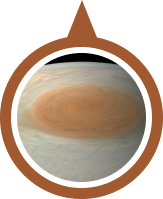

jupiter
Jupiter is the fifth planet from the Sun and the largest in the Solar System. It is a gas giant with a mass two and a half times that of all the other planets in the Solar System combined, but less than one-thousandth the mass of the Sun.
Source :
Wikipedia